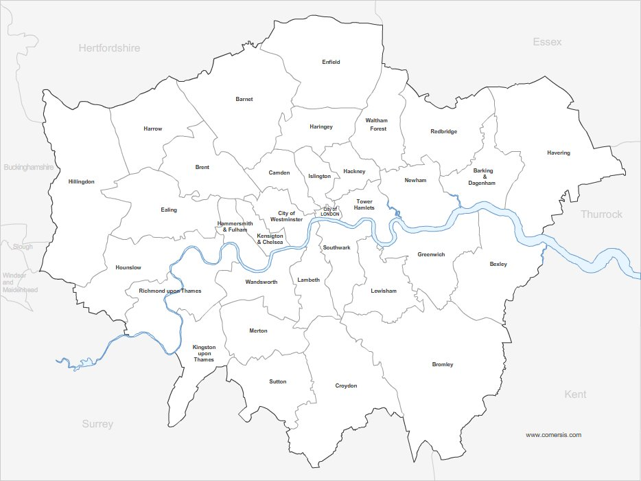

The temperature in your neighborhood isn't random.
Small differences in greenness and land cover create big differences in how cities cool at night.
- Inner London boroughs have less greenness than outer boroughs.
- Boroughs containing rivers have less greenness than boroughs without rivers.
- People vacate during the daytime (lower relative temperatures). People live in places at night (higher relative temperatures).

Map of London Boroughs